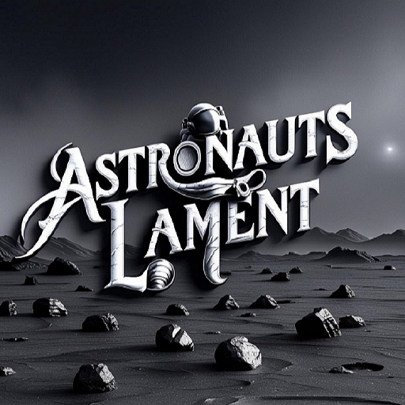

Astronaut’s Lament
What High Score Can You Get?
A challenging 2D platformer set on a hostile alien planet. Navigate treacherous terrain, dodge asteroids, and survive to escape!
Key Features
- Procedurally generated levels with moving platforms
- Deadly hazards: asteroids, toxic gas, and meteor showers
- Unique grayscale art style with color-shifting effects
- 13 atmospheric tracks to immerse you in the alien world
- Track high scores for levels reached and asteroids destroyed
Available Now on Epic Games Store!
Privacy Policy